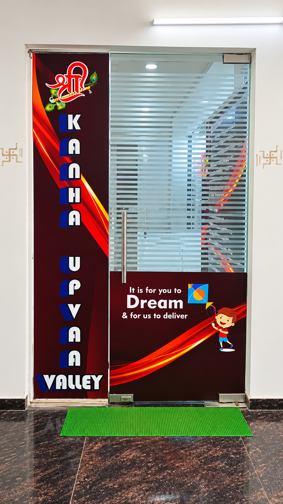
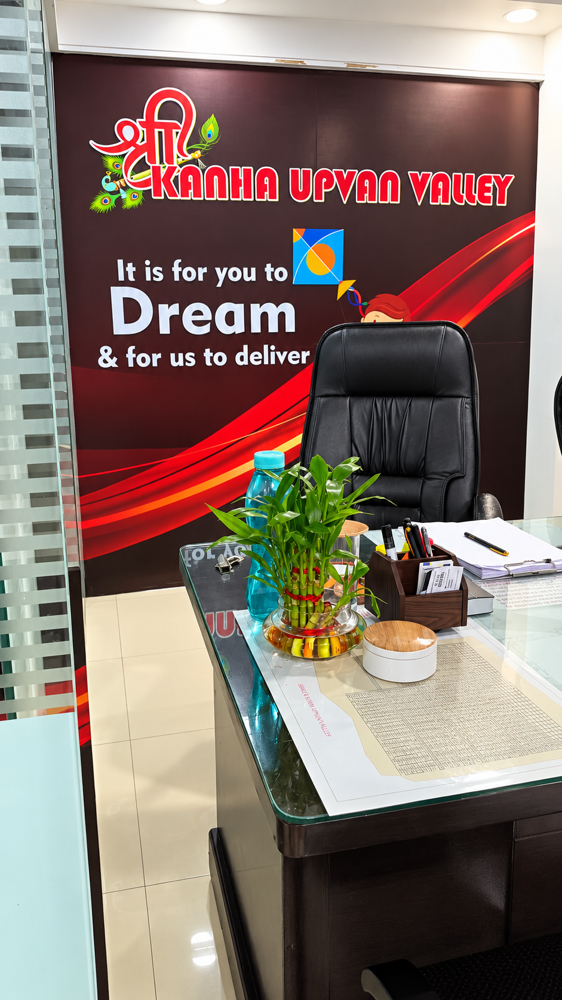
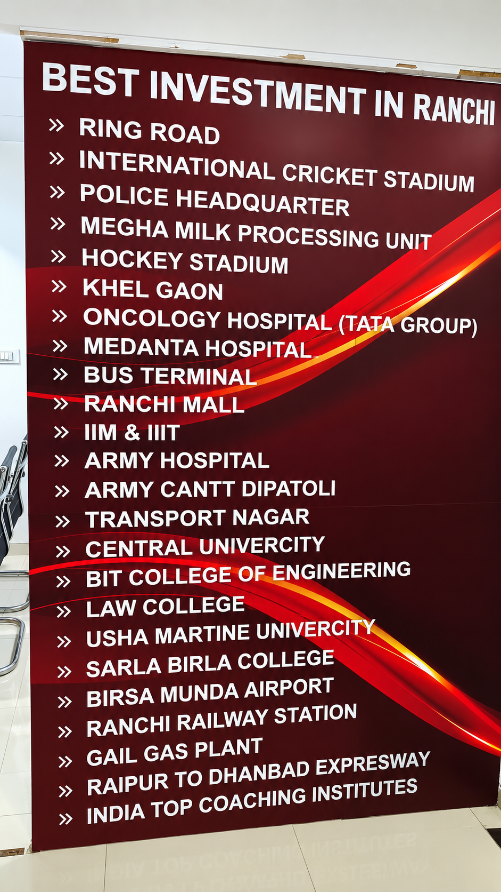
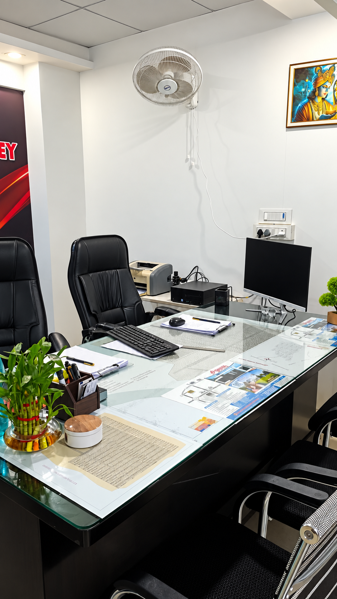

Founder · Ex-Army Personnel
Gulab Chandra Yadav
Bringing the values of discipline, commitment and responsibility shaped through years of service, Gulab Chandra Yadav is one of the founding partners behind Shri Kanha Upvan Valley.
ABOUT SHRI KANHA UPVAN VALLEY
Shri Kanha Upvan Valley is presented in the project brochure as a plotted development in Balu, Ranchi, with residential, commercial, farm house and duplex plot options.

THE PROJECT
The brochure positions the project near Devi Mandap and Pithoria Chowk, with internal road planning and community-oriented features.


The project material lists a 25 feet wide main road and 20 feet branch roads, along with street lights, a campus outer boundary, and entry and exit gates.
It also lists a temple and Chatt Talab, sites for a school and hospital, 24×7 CCTV camera provision, and a park & community hall.
BASIC FEATURES
These points are taken directly from the brochure's basic-features list; the page does not add facilities beyond the source material.
LOCATION
The distances below are the figures shown in the brochure's walking-distance section.
The master-plan page identifies the site as Village Balu, Thana Pithauria, Thana No. 29, District Ranchi.

PLOT OPTIONS
The brochure presents four available plot categories.
THE FOUNDERS
Shri Kanha Upvan Valley was started by two friends and ex-servicemen whose shared values shaped the vision behind the company.
With backgrounds rooted in service, Gulab Chandra Yadav and Mahesh Mishra came together to build a company with a long-term outlook and a clear focus on creating thoughtfully planned places for people to live and grow.
Founder · Ex-Army Personnel
Bringing the values of discipline, commitment and responsibility shaped through years of service, Gulab Chandra Yadav is one of the founding partners behind Shri Kanha Upvan Valley.
Founder · Ex-Army Personnel
As a founding partner, Mahesh Mishra brings the same spirit of discipline, trust and long-term thinking to the company's journey and its vision for planned development.
OUR OFFICE
The page uses only the four user-provided images supplied for this About page.
Source note: Project facts and distances on this page are derived from the supplied Kanha Upvan Valley brochure. The four photographs shown here are the user-provided images for this About page.